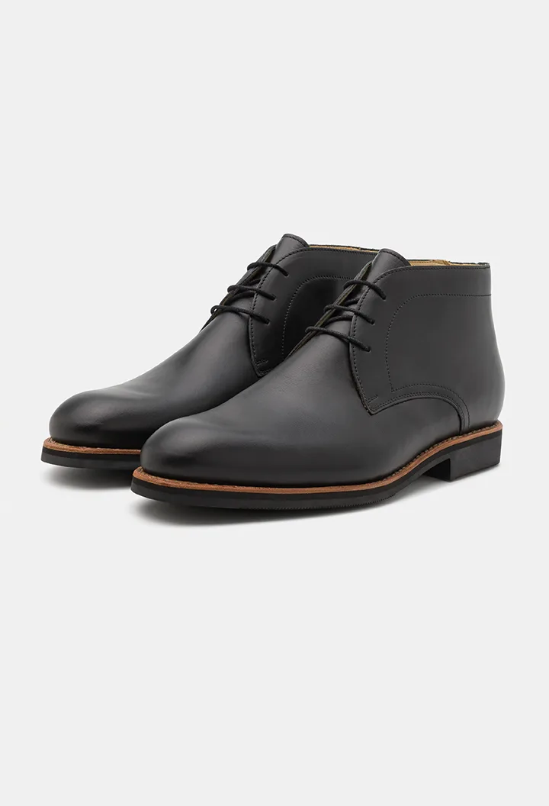
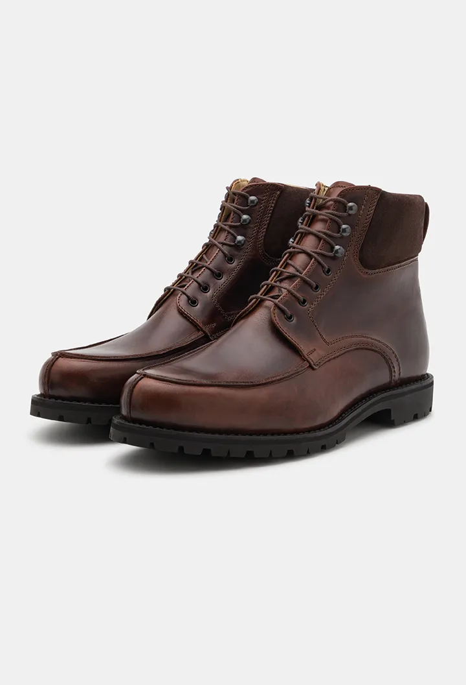

Shop/Boots/Schnürboot aus Kalbsleder

Boots
Schnürboot aus Kalbsleder
Eiche
475,00 Euro
Schnürboot aus Pullup-Kalbsleder in Eiche. An den Kanten bricht die Farbe auf, das gehört zum Leder.
Englische Größen, sie fallen etwas größer aus. Bei der Erstbestellung eine halbe Nummer kleiner wählen. In Österreich und Deutschland ab 100 Euro versandkostenfrei.
- KategorieBoots
- FarbeEiche
- MachartRahmengenäht
- HerkunftGraz
- Größen6 bis 12, inkl. Halbgrößen
Lieber ganz nach Maß?
Diesen Modelltyp gibt es auch als Maßschuh, aus rund 200 Lederarten und in Ihrer Passform.
Zum Maßschuh-BeraterÄhnliche Modelle